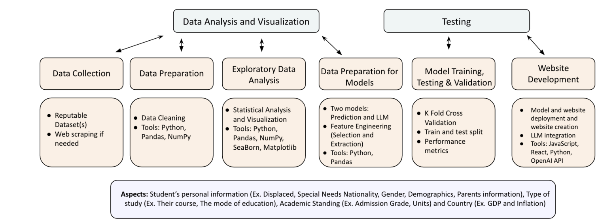

This report presents the development and implementation of a Student Success AI Assistant designed to address the critical issue of high dropout rates in higher education institutions, particularly in emerging economies. The system leverages artificial intelligence and machine learning algorithms to analyze a comprehensive dataset of student information, predict the likelihood of dropout, and provide personalized recommendations for intervention. With a high-performing Random Forest model and an LLM, the AI Assistant identifies key predictors of student attrition, including financial instability, academic underperformance, and lack of engagement. The report discusses the relevant literature, our methodology, potential concerns, and emphasizes the importance of ethical considerations and data governance. Ultimately, this AI-powered solution aims to significantly reduce dropout rates, improve student outcomes, and contribute to broader economic development in emerging economies.
Colleges and universities face significant challenges in retaining students and ensuring their academic success. In 2022, 2.1 million students dropped out between the ages of 16 and 24, and this rate has steadily increased (Valencia-Arias et al., 2023). High dropout rates not only impact individual success but also have consequences for national economic development. This problem area and topic is further exacerbated in the context of emerging economies where resources are mostly scarce and students dropping out of education may have a detrimental impact on the future prospects of nations. This means that dropping out of education in this context is a serious issue, where high dropout rates lead to economic loss for families and governments and create a cycle of poverty that becomes increasingly difficult to break. In emerging economies, education serves as a critical pathway to upward mobility and economic stability. When students drop out, not only are individual opportunities for better livelihoods diminished, but the nation also faces a shortage of skilled labor, hindering economic growth and innovation (Latif et al., 2015). In emerging economies, university dropout rates can exceed 50 percent, representing a deadweight loss of intellectual capital (Valencia-Arias et al., 2023). Moreover, students from disadvantaged backgrounds are especially vulnerable given the disproportionate allocation of financial resources, academic preparation, and access to quality primary and secondary schools (Shiao et al., 2023). Common reasons for dropout range from financial constraints, familial pressures, mental health, and academic struggles. However, many of these issues go unnoticed by the institutions in which the student attends. Identifying students at risk for dropping out early enough to intervene, while proven difficult, is the best solution to ensure degree completion. Artificial intelligence (AI) offers promising solutions to address this critical issue in higher education institutions. By leveraging algorithms and a robust dataset, AI-powered systems have the ability to analyze and parse out useful factors to predict student success and identify risks of dropping out with a high degree of accuracy (Kalegele, 2020). These predictive models can consider a wide range of variables, including demographic information, previous academic background, GDP of the country, tuition, etc and in turn provide a comprehensive assessment of each student’s likelihood of success. By harnessing the power of AI, our team produced a system that universities in emerging economies can use to significantly reduce student dropout rates, improve student outcomes, and contribute to broader economic development.
As aforementioned, our area of concern is the educational sector. For us to propose a system that provides users with personalized feedback and offers actionable recommendations, we must investigate and analyze previous literature and related works. This allows the development of a solution upon a stable foundation. AI has shown promise in automating systems within the educational sector (Chen et al., 2020; González-Calatayud et al., 2021). Recent research demonstrates that prediction models used in higher education can be reasonably accurate at identifying students who are more likely to succeed in the case of admission to university or not. Bird et al. (2023) found that logistic regression models can be at least as accurate as professional college advisors at predicting students’ college enrollment. While the research on this topic is limited, the increase in a short period of time demonstrates that colleges and universities have begun to use predictive models for admissions. However, our system occupies a niche in that we do not seek to turn away students on the basis of certain predictors, but rather, take those into consideration and offer actionable recommendations to bolster their success. AI innovation has been prominent in the scope of learning analytics and student support. These technologies have the ability to offer real-time analysis of large data to facilitate fast feedback and assessment. For example, Li et al. (2022) developed a generic algorithm grouping method to facilitate collaborative groups in universities that outperformed traditional methods. Additionally, the study noted overall support for AI’s anticipated role in the future vehicle also noting its ethical and social implications. Although implementation of AI in higher education remains in the early stages for many institutions, there exists a large body of literature on AI systems to support hiring decisions. More specifically, the potential challenges and ethical considerations. With this in mind, the challenges faced in the educational field also persist throughout the hiring and retention process, mainly through how AI systems can perpetuate existing biases in the hiring process. Raghavan et al. (2020) analyzed 19 vendors of algorithmic pre-assessments and found that most lacked adequate safeguards against algorithmic bias. The researchers noted that many tools relied on historically biased data or used proxy variables that could lead to discriminatory outcomes. Similarly, Ajunwa (2020) argues that AI tools often reproduce human biases encoded in their training data, potentially leading to unlawful discrimination against protected groups. The study highlights how seemingly neutral algorithms can have negative impacts on minority groups. Likewise, Bogen and Rieke (2018) examine the potential for AI tools to violate anti-discrimination laws, particularly when they use protected characteristics or close proxies as inputs. This study argues for increased regulatory scrutiny and transparency requirements for AI-based candidate recruitment systems. The use of AI in educational and consequently career fields thus raises significant legal and ethical questions, which is why we plan to implement a detailed and robust governance framework and user policy. Further, while predictive analysis bolstered by AI offers potential efficiency gains and standardization in higher education dropout prediction, they also pose significant risks of perpetuating or exacerbating existing biases that should be acknowledged. With this, the application of AI in higher education, particularly in the admissions process, has gained significant attention, however, there is limited literature concerning student dropout rates and improving retention rates in universities (Chassignol et al., 2018). As demonstrated, there exists a gap in the literature when it comes to using AI to address student dropout rates, and this gap is exacerbated in the context of emerging economies, where a lack of research or proposed solutions for dropout rates are proposed in the context of emerging markets. To fill this gap, we plan to use the existing literature to support our research goals and create a system that emphasizes transparency and ease of use, importantly addressing dropout rates in the context of emerging economies through identifying at-risk students and providing recommendations related to these markets. .
Our assistant takes student inputs, predicts risk, and communicates results through a chat interface using OpenAI’s GPT model. Students flagged as “at risk” receive friendly, plain-language suggestions that could include mentorship, tutoring, or financial aid. The system is built to ensure equity, explainability, and student empowerment.
We designed a web application using Python (Flask), HTML/JavaScript, and OpenAI's GPT API. It connects frontend inputs to backend machine learning logic and language response generation.
We used a dataset from Kaggle with 16 student attributes including age, GPA, socioeconomic status, academic history, and dropout label. We encoded categorical variables, handled class imbalance using SMOTE, and used PCA for dimensionality reduction.
We evaluated Logistic Regression, KNN, Random Forest, SVM, and Artificial Neural Networks (ANN). Random Forest gave the best F1 score and AUC (93%). ANN and SVM followed closely. Our evaluation criteria included recall, precision, accuracy, and specificity.
We used OpenAI’s API to generate feedback based on predictions. For students at risk, the assistant provides supportive advice tailored to input features (e.g., low GPA or high workload). The LLM is instructed to use encouraging, culturally sensitive language.
Our system enables institutions in emerging economies to deploy an affordable, scalable AI advisor. This supports human development goals, reduces dropout, and improves retention. It is especially useful in countries where student services are under-resourced.
View the full code and documentation on GitHub →